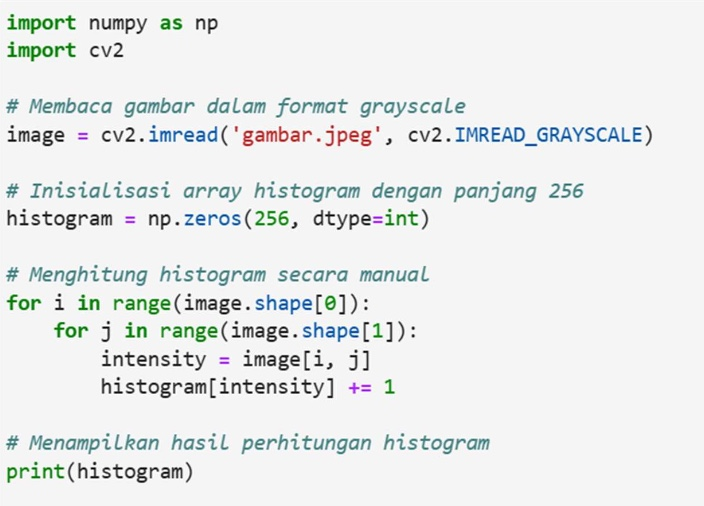
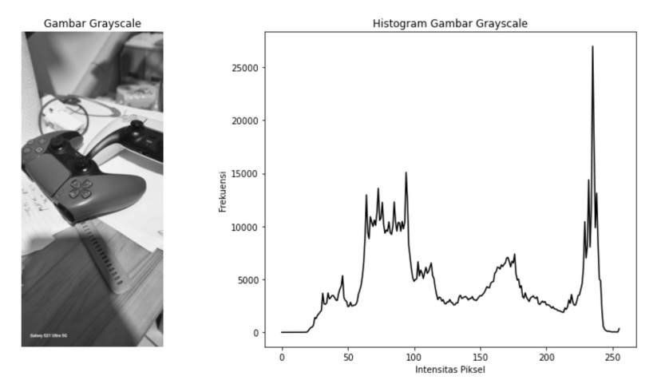
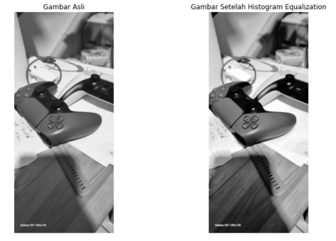

Pertemuan 4: HISTOGRAM CITRA
Materi ini membahas Histogram Citra dalam Pengolahan Citra Digital
Sub-Topik:
- Histogram dalam konteks pengolahan citra
- Algoritma Perhitungan Histogram
- Ekualisasi Histogram
- Spesifikasi Histogram
Histogram dalam konteks pengolahan citra
Histogram dalam konteks pengolahan citra adalah grafik yang merepresentasikan distribusi intensitas piksel dalam sebuah gambar. Setiap gambar digital terdiri dari piksel-piksel dengan nilai intensitas tertentu. Pada gambar grayscale (hitam- putih), intensitas piksel bernilai dari 0 (hitam) hingga 255 (putih). Pada gambar berwarna (RGB), setiap piksel terdiri dari tiga saluran warna (Red, Green, Blue), yang juga memiliki intensitas dari 0 hingga 255 untuk masing-masing warna. Histogram membantu kita memahami karakteristik gambar, misalnya kontras, pencahayaan, dan distribusi warna.
Histogram berguna untuk berbagai operasi pengolahan citra, seperti: Deteksi pencahayaan: Histogram yang cenderung berada di ujung kiri (nilai rendah) menunjukkan gambar yang gelap, sementara yang di ujung kanan menunjukkan gambar yang terang. Perbaikan kualitas gambar: Misalnya, dengan menggunakan histogram equalization untuk meningkatkan kontras. Pengolahan lebih lanjut: Digunakan dalam berbagai teknik analisis citra lanjutan seperti segmentasi dan thresholding.
Algoritma Perhitungan Histogram
Histogram citra mewakili distribusi nilai intensitas piksel dalam suatu gambar. Algoritma perhitungan histogram pada dasarnya adalah menghitung frekuensi dari setiap nilai intensitas yang ada pada gambar.
Langkah-langkah dalam perhitungan histogram antara lain:
- Inisialisasi Array Histogram: Siapkan array dengan panjang yang sesuai dengan jumlah intensitas. Misalnya, untuk gambar 8-bit, ada 256 kemungkinan nilai intensitas (0-255), sehingga array histogram memiliki panjang 256.
- Iterasi Piksel Gambar: Lakukan iterasi pada setiap piksel di gambar dan periksa nilai intensitasnya.
- Peningkatan Frekuensi di Histogram: Untuk setiap intensitas yang ditemukan, tambahkan frekuensinya pada array histogram di indeks yang sesuai.
- Normalisasi (Opsional): Terkadang histogram perlu dinormalisasi sehingga nilai frekuensinya diubah menjadi proporsi dari jumlah total piksel dalam gambar.
Contoh Penerapannya Pada Python
Gambar 4.1: Kode Python Perhitungan Histogram Manual pada Citra

Gambar 4.2: Output Kode Perhitungan Histogram Manual pada Citra

Gambar 4.3: Kode Python Perhitungan Histogram Manual pada Citra
Gambar 4.4: Output Gambar Kode Perhitungan Histogram Manual pada Citra
Penjelasan kode:
- cv2.imread('gambar.jpg', cv2.IMREAD_GRAYSCALE): Membaca gambar dalam format grayscale.
- cv2.calcHist([image], [0], None, [256], [0, 256]): Menghitung histogram gambar grayscale. Argumen [0] menunjukkan bahwa histogram dihitung untuk channel 0 (grayscale).
- plt.plot(histogram): Menampilkan histogram sebagai grafik garis.
Ekualisasi Histogram
Ekualisasi histogram adalah teknik yang digunakan untuk meningkatkan kontras gambar dengan menyebarkan distribusi intensitas piksel secara lebih merata. Teknik ini penting dalam aplikasi seperti pengenalan objek dan peningkatan detail gambar.
Contoh Penerapannya Pada Python

Gambar 4.5: Kode Python Perhitungan Histogram Ekualisasi pada Citra
Gambar 4.6: Output Kode Perhitungan Histogram Ekualisasi pada Citra
Penjelasan kode:
- cv2.equalizeHist(image): Fungsi ini melakukan equalization pada histogram gambar grayscale.
- Gambar hasil equalization akan memiliki kontras yang lebih baik karena distribusi intensitasnya telah diperbaiki.
Spesifikasi Histogram
Spesifikasi histogram (atau matching histogram) adalah proses menyesuaikan histogram gambar sumber sehingga cocok dengan histogram target yang diinginkan, biasanya berasal dari gambar referensi. yang terdiri dari Langkah-langkah seperti menghitung histogram dan CDF gambar sumber IsI_sIs, Menghitung histogram dan CDF gambar referensi IrI_rIr, mencocokkan intensitas gambar sumber dengan gambar referensi berdasarkan nilai CDF. Setiap piksel pada gambar sumber diubah sehingga histogramnya mirip dengan histogram gambar referensi, lalu mentransformasi piksel gambar sumber menggunakan hasil pencocokan. Proses ini menghasilkan gambar baru yang memiliki distribusi intensitas yang serupa dengan gambar referensi.